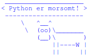
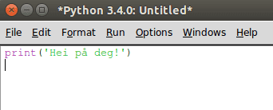
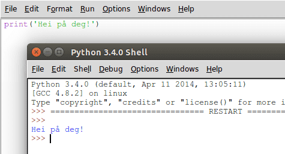

I dette kurset skal vi introdusere programmeringsspråket Python. Dette
er et veldig populært programmeringsspråk som kan brukes til det
meste. Python brukes av mange av de største og mest kjente selskapene
i verden som for eksempel Google, NASA, CERN og andre.
Vi begynner ganske enkelt med å se på hvordan vi kan lage små
programmer i Python som kan lese og vise tekst. Spesielt vil vi lage
vår egen versjon av et historisk program som heter Cowsay
(http://www.cowsays.com/) hvor en smart ku
sprer sin visdom.

Steg 1: Hei Verden
For å sjekke at Python virker som det skal begynner vi med å lage et
kjempeenkelt program. Vi vil bare skrive en enkel hilsen på skjermen.
Sjekkliste
Åpne IDLE, editoren som følger med Python. Vi vil bruke denne til å
både skrive og kjøre programmene vi skriver.
Windows: Åpne IDLE fra startmenyen.
Mac: Åpne terminal.app, skriv idle og trykk enter.
Linux: Åpne en terminal, skriv idle og trykk enter.
Dette vil åpne et vindu som heter Python Shell. Hvis du ikke
finner IDLE, eller vinduet ikke åpner seg kan det være fordi
Python ikke er installert. I såfall kan du laste ned siste versjon
fra http://www.python.org/. Spør gjerne
om hjelp til dette om nødvendig.
Vinduet Python Shell som åpnet seg er der du vil se resultatet av
programmet ditt. For å skrive et nytt program må vi åpne et
programmeringsvindu i tillegg. I menyen, velg File > New File. Pass på at begge vinduene er synlige.
I dette nye vinduet skal vi nå skrive vårt første Python-program.
Skriv følgende:

Vi skal nå lagre og kjøre dette programmet. Velg først File > Save, og gi programmet ditt navnet hei.py. Deretter kan du kjøre
programmet ved å klikke Run > Run Module. Du skal nå se at Python
skriver en liten hilsen i det første vinduet.

Gratulerer! Du har nå skrevet og kjørt ditt første Python-program!
Feilmeldinger
Python krever at du er veldig nøyaktig når du programmerer, og hvis du
skriver noe Python ikke forstår vil den skrive en feilmelding til deg
når du velger Run > Run Module. Du har kanskje allerede opplevd
dette! Hvis ikke kan du prøve å bytte ut print med pint i koden
din, og prøve å kjøre programmet en gang til.
Når du får en feilmelding må du gå tilbake til koden, og sjekke ekstra
nøye at du har skrevet alt riktig. Dette vil bli enklere etterhvert
som du får mer trening i å programmere.
Sjekkliste
Vårt første program bestod av bare en kommando, nemlig funksjonen
print som brukes for å fortelle Python at vi vil skrive noe ut på
skjermen. Det vi vil skrive til skjermen putter vi inn i paranteser.
I dette tilfellet ville vi at Python skulle skrive teksten Hei på deg!. For å fortelle Python at Hei på deg! skal tolkes som ren
tekst og ikke som en Python-kommando må vi skrive teksten mellom
fnutter, '.
Vi kan enkelt endre på hva Python skriver til skjermen. Prøv å endre
programmet ditt til det følgende:
print('Hei alle sammen!')
Lagre filen på nytt, og kjør programmet.
Prøv å endre teksten til noe du finner på selv, og kjør programmet
igjen!
Python-filer
Vi har nettopp lagd et Python-program som heter hei og som vi har
lagret i en vanlig tekstfil som heter hei.py. Python kaller en slik
tekstfil for en module. Du kan selv bestemme hva du vil kalle
Python-programmene dine, men filene hvor du lagrer programmene må ha
etternavnet .py for at Python skal kjenne dem igjen.
Det er også en god ide å unngå å bruke norske tegn som æ, ø og
å, samt mellomrom i programnavnet. I stedet for mellomrom kan du
bruke understrek, _, for eksempel mitt_program.py.
Steg 2: Hva heter du?
Vi skal nå se hvordan vi kan få Python til å stille oss spørsmål. For
å gjøre dette bruker vi en ny funksjon som heter input.
Når du bruker funksjonen input, venter datamaskinen din med å kjøre
resten av programmet til du har skrevet noe og trykket på enter-tasten
på tastaturet.
Sjekkliste
Endre programmet ditt slik at det nå ser slik ut:
navn = input('Hva heter du? ')
print('Hei ' + navn)
Lagre og kjør programmet. Skriv inn navnet ditt når du blir spurt
om det, og trykk enter-tasten. Hilser Python deg med navn?
For at teksten skal se bra ut må du passe på at du bruker
mellomrom. Det ser best ut med et mellomrom mellom ? og ' i
input-funksjonen, og også et mellomrom mellom Hei og ' i
print-funksjonen.
Legg merke til at i programmet bruker vi en variabel navn som
husker navnet du skriver inn. Slike variabler bruker vi hele tiden
når vi programmerer. Variabler lages automatisk når vi bruker =.
Du kan selv bestemme hva variablene skal hete, og det er lurt å
velge navn som beskriver det variabelen skal huske for deg.
Prøv å legg inn flere linjer i programmet ditt. Kanskje Python kan
spørre deg hvor du bor, hvem som er bestevennen din eller kanskje
hva som er favorittfargen din? Bruk variabler for å huske disse
tingene slik at Python kan skrive dem tilbake på skjermen etterpå.
Hurtigtaster
Når vi programmerer kan det være greit å slippe å lete inne i menyen
for å lagre og kjøre programmene. I stedet kan vi bruke hurtigtaster.
Hvis du ser etter vil du se i menyen at til høyre for kommandoene står
hurtigtastene listet opp. For eksempel kan du trykke Ctrl og S for
å lagre (Cmd og S på Mac) eller F5 for å kjøre programmet (Fn
og F5 på Mac).
Steg 3: Kuprat
La oss lage en enkel versjon av et klassisk program som heter Cowsay
(http://www.cowsays.com/), og som ble laget
av Tony Monroe. Med dette programmet kan man få en stilig ku til å si
omtrent hva som helst.
Sjekkliste
Vi begynner med å tegne kua. Start et nytt IDLE-vindu ved å velge
File > New File. Skriv inn følgende
program:
Nå kan vi bruke det vi har lært tidligere for å enkelt endre på
meldingene som kua sier. Ved hjelp av input kan vi spørre om hva
kua skal si. Endre programmet slik at det ser ut som følger:
Hvordan virker programmet når du kjører det nå? Prøv med
forskjellige tekster. Ser du et problem?
Snakkeboblen til kua er ikke tilpasset lengden av meldingen, slik at
av og til blir snakkeboblen for stor og av og til blir den for
liten. For å fikse dette skal vi bruke en ny funksjon som heter
len (len er en forkortelse for length som betyr lengde). Denne
kan finne lengden til en tekst. For å teste denne funksjonen, prøv å
legge inn denne linjen rett etter input-linjen i programmet ditt:
print(len(melding))
Dette vil skrive ut lengden av meldingen før kua skrives ut.
Vi kan bruke denne lengden av meldingen til å regne ut hvor lang
snakkeboblen må være. Siden vi har mellomrom på begge sider av
meldingen bør snakkeboblen være 2 tegn lengre enn meldingen.
boblelengde = len(melding) + 2
For å tegne snakkeboblen kan vi bruke et Pythontriks som kan
repetere tekst. Vi har allerede sett at vi kan sette sammen tekst
ved å bruke +, for eksempel 'Hei ' + navn. For å repetere tekst
kan vi gange den med et tall. For eksempel vil 'hei' * 3 bli til
'heiheihei'. Vi kan derfor gange '-' med snakkeboblelengden for
å tegne snakkeboblen i riktig størrelse.
Endre programmet ditt slik at det blir seende ut som følger:
Lagre og kjør programmet. Blir snakkeboblen riktig størrelse?
Prøv selv
Kan du tegne andre dyr eller figurer som også kan snakke? Prøv
eventuelt å gjøre små endringer på utseendet til kua, for eksempel kan
du forandre øynene (med -- vil det se ut som om den sover) eller
kanskje legge til en tunge?
Du kan også legge til flere forskjellige figurer i samme program, slik
at det virker som om de snakker sammen. Prøv deg fram!
Forbedre denne siden
Funnet en feil? Kunne noe vært bedre? Hvis ja, vennligst gi oss tilbakemelding ved å lage en sak på Github eller fiks feilen selv om du kan. Vi er takknemlige for enhver tilbakemelding!